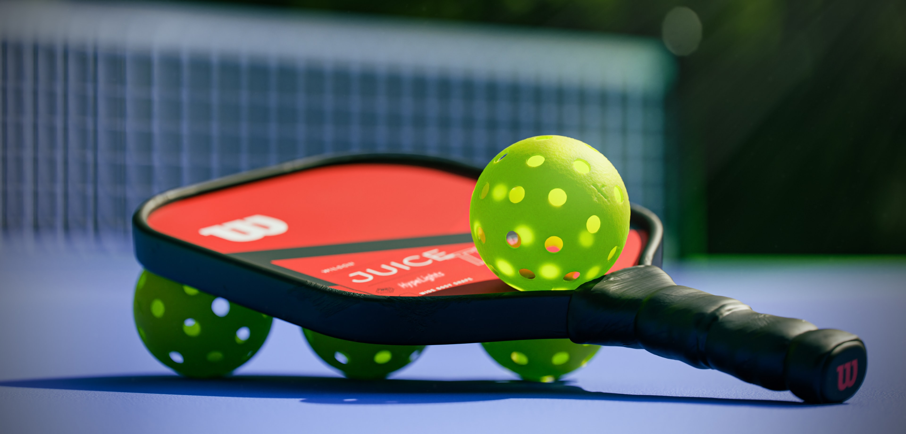

Pickleball has many similarities to tennis. The most obvious difference is the size of the court. Pickleball is played on a that is 44 feet long and 20 feet wide. Another difference is the equipment. Pickleball is played with small wooden or plastic paddles and a ball the size of a tennis ball but similar in material to a wiffle ball. It is the same dimensions as a badminton court. Similar to tennis, Pickleball can be played as either singles or doubles. In pickleball, both singles and double are played on the same size court. Another similarity to tennis is when serving in pickleball you must serve to the box that is kiddy corner from where you are serving. Unlike tennis, you serve underhand in pickleball. The serve in pickleball is mostly used just to get the point started, it is not used as much of a weapon like it is in tennis. The purpose of serving underhand is you have to hit the ball upward so it is not as difficult to return. Games are normally played to 11 points and you only score by winning points when your team is serving.
Equipment | Court
How To Play
Pro Matches